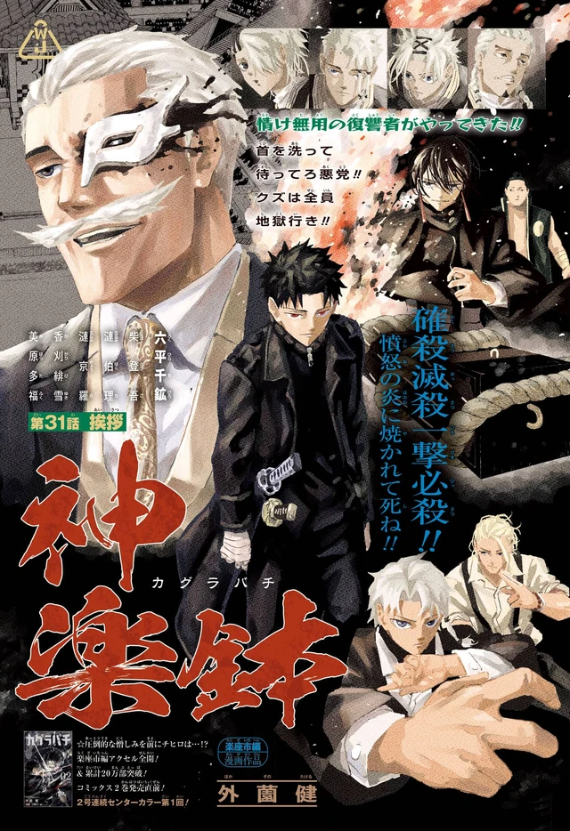

Overview
Hakuri was beaten into believing he had no talent. The clan’s Isou — a burial-force technique — would not answer him because he was scattering his own spirit energy. When he chose Chihiro over the Rakuzaichi, the seal on that self-doubt broke. He is one of two people in clan history to wield both Isou and the Storehouse, the subspace the family head uses to warehouse loot and human beings.
Storehouse
Hakuri can register a person and their charged possessions, then move blades across the country. That single trick is why the Kamunabi bother to keep Chihiro: the bearers can be un-armed and re-armed without a siege. It is also why the Hishaku hunt him. The auction was a building. Hakuri is the building that walks.
Personality
He was beaten into believing he had no talent. The clan called him empty. Isou would not answer because he was scattering his own spirit energy, and the family read that scatter as defect. When he chooses Chihiro over the Rakuzaichi, the seal on that self-doubt breaks. The book does not turn him into a swaggering heir. It turns him into a person who will walk into a collapsing Storehouse and a Kamunabi raid because someone finally treated him as a partner.
He remembers a woman the auction killed. That memory is what opens the Storehouse in him — not a lecture from Kyora, not a blood rite. The Sazanami spent two centuries warehousing loot and human beings. Hakuri is the son who kept the names. Volume 4’s title is Equal. The jacket is two figures at storehouse dusk. That is the brief: Chihiro does not pick him up as a tool. They meet in the middle.
Soya’s volume extra — Sazanami Sōya no Modoranai de Kioku — is the older brother who treated Hakuri as defective stock, given a gag about memories he would like to misplace. It is not a redemption. It is the clan’s emotional illiteracy as a four-page joke. Hakuri is what happens when that illiteracy produces a person instead of a product.
Abilities
Isou is the clan’s burial-force technique. It would not answer him while he scattered his spirit energy. Once the self-doubt broke, he became one of two people in Sazanami history to wield both Isou and the Storehouse — Kura, the subspace the family head uses to warehouse loot and human beings. Kyora’s version includes environmental control inside the Kura. Hakuri’s version is the one that walks out of the building.
He registers a person and their spiritually charged possessions, then moves blades across the country. That is the logistics of Part 1’s second half. Tobimune goes back to Samura because Hakuri can put it there. Bearers can be un-armed and re-armed without a siege. The Kamunabi keep Chihiro because Chihiro comes with Hakuri. The Hishaku hunt Hakuri because the auction was architecture, and the discarded son inherited the architecture.
Storehouse-as-Kamui is the lazy comparison. The interesting version is inheritance: two hundred years of Rakuzaichi compressed into one nervous system the family had already thrown away. He is not a blade bearer. He does not need to be. After Samura’s false death of Uruha, after the hotel, after the Tokyo infiltration, he is still the reason swords arrive on time.
Story role
Hakuri enters in the Rakuzaichi arc. Shinuchi is listed at the 208th auction. Chihiro meets the discarded Sazanami and the Kamunabi’s flame in the same stretch of chapters. Hakuri remembers the woman the auction killed; the Storehouse opens. Tenri dies on a half-stable Datenseki stone trying to impress Kyora. Inside the Kura, Chihiro spends the last of Cloud Gouger to take Enten back. Kyora, dying, touches Magatsumi and almost becomes someone else. He dies as himself long enough to admit, too late, what he did to Hakuri.
Prisoners leave. The Rakuzaichi ends. Chihiro joins the Kamunabi on terms that include Enten — and include Hakuri. The next book starts on a train because a Sanso is attacked and the bearers have to be moved. Hakuri is how you move them. He returns Tobimune to Samura at Senkutsuji. Samura clears the temple and then cuts Uruha down. It looks like a Hishaku pact. It is Suzaku. Hakuri is standing in the middle of a mercy he cannot yet read.
In Tokyo, Kasen’s leak is on the table. Kudo dies for Hakuri. Uruha — contract broken, Crimson Recital limping back — walks into the Kamunabi raid to keep Hakuri alive. The Hishaku want the walking Storehouse more than they want another dead bearer. Part 1 ends with the Sword Master loose and the auction house already gone. Hakuri is still the building.
Relationships
Kyora is the father and the eleventh head: polite, absolute, certain that the auction is civilization. Hakuri is a failed product until the boy becomes a rival Storehouse. The admission at the end is the only kindness the book gives Kyora. Soya, Tamaki, Enji, and Tenri are the siblings — the Tou as household military. Tenri dies on Datenseki trying to be useful. Soya gets the memory gag in the extras. The clan is two centuries of market; the children are stock.
Chihiro is the choice that breaks the seal. Volume 4 pairs them. Shiba is the extraction adult around that partnership. Uruha later walks into a raid for Hakuri the way Chihiro once walked into an auction for him. Hiyuki burns the Rakuzaichi rather than leave people in the Storehouse; Hakuri is the reason those people can leave through a door that used to be a family member.
The Hishaku hunt him after the building falls. Yura’s ten need blades moved as badly as the Kamunabi do. Kudo of the Kamunabi dies on that same logistics. Hakuri is why both sides’ maps have a moving room in them.
Notes
Disowned Sazanami. Isou and Storehouse. Family: Kyora; Soya, Tamaki, Enji, Tenri. Volume 4 (Equal) and Volume 5 (Fervent) put him on the jacket with Chihiro; Volume 5 adds Kyora and Hiyuki. Chapter 31’s color page is the auction house starting to answer him.
Weekend Weebs’ Naruto-DNA list files Storehouse next to Kamui. The archive’s working read is inheritance, not homage-as-court-case. The Part 1 retrospectives spend real time on his walk. Official chapters: VIZ / MANGA Plus. Buy the volumes for Soya’s extra; this site does not host it.